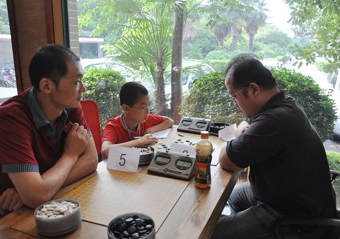

南通公开赛之行
#1 南通公开赛之行作者：被感动的人 发表时间：2010-7-27 17:28:09
本文原载于中华连珠网，iwzq已获转载权。
时间：2010年7月17日-18日
地点：南通
成员：顾老水月大师七夜猪猪花月 ME （共7人）
#2 Re:南通公开赛之行作者：被感动的人 发表时间：2010-7-27 17:28:22
中午12点集合出发吃中饭
小孩子们提早排队由老师带领下前往
午饭很美味
吃完撤退
我又拉着花月前往早上走来时看到的一小片荷花池地
除了阳光毒辣了些
景色很优美及宁静
貌似南通垂钓之人好多
时不时的都能看到
也有钓到小龟的。。好厉害。。
#3 Re:南通公开赛之行作者：被感动的人 发表时间：None
四场比赛完后
感觉45分钟的时间还蛮充足的（难得的够用）
周老又带着我们去闲逛纺织博物馆
它有着南通最早的缩小版造型
晚上聚餐
额。。被困于一道黑蚂蚁菜上。。
那是的的确确的黑蚂蚁和蜜蜂
被炸过后作为一道菜by:web版 IP： 已记录
#4 Re:南通公开赛之行作者：被感动的人 发表时间：2010-7-27 17:29:22
第2天一早
带着行李打车去了比赛场地
第一轮 哎
无可避免的碰上自己人七夜小朋友
原本昨天水月说要给偶备战的
但没机会
因偶开局这个苦恼问题才刚刚开始想
猪猪原本建议开疏星 #5 Re:南通公开赛之行作者：被感动的人 发表时间：2010-7-27 17:29:47 中午继续是老地方吃饭 反正很合偶的口味 大众化 啥都能吃。。哈哈。。哈哈~~ 趁中午休息时间 把南通棋院的房屋构造格局 楼上楼下都看了一遍 真是太完美了 让偶羡慕的眼都红里。。。< #6 Re:南通公开赛之行作者：被感动的人 发表时间：2010-7-27 17:31:05 比赛现场 交流  讲解 集体照 南通棋院造型格局 ［此帖子已被 被感动的人 在 2010-7-29 15:24:50 编辑过］ #7 Re:南通公开赛之行作者：黄药师 发表时间：2010-7-27 18:18:24 终于看到有偶的照片了！ #8 Re:南通公开赛之行作者：被感动的人 发表时间：2010-7-27 20:49:25 #9 Re:Re:南通公开赛之行作者：黄药师 发表时间：2010-7-27 20:59:42 偶一般拍照片 难得被拍。 欢迎来南通。 第二张是哪一个啊？ #10 Re:南通公开赛之行作者：锈刀 发表时间：2010-7-27 22:17:05 ［ 被感动的人 于 2010-7-27 22:17:56 时花20金币送鲜花一朵］ ［ 被感动的人 于 2010-7-28 13:14:04 时奖励此帖[金币加 20 威望加1］


 小顾你知道棋苑造型格局的第二张照片，那个长方形的凹槽是干嘛的啊？
小顾你知道棋苑造型格局的第二张照片，那个长方形的凹槽是干嘛的啊？引用：
原文由 被感动的人 发表于 2010-7-27 20:49:25 :
你还可以再发嘛~ 话说南通这么好看啊，真想去看看 小顾你知道棋苑造型格局的第二张照片，那个长方形的凹槽是干嘛的啊？  ，那是日式棋室，日本人下棋的地方就是这个样子的。
，那是日式棋室，日本人下棋的地方就是这个样子的。